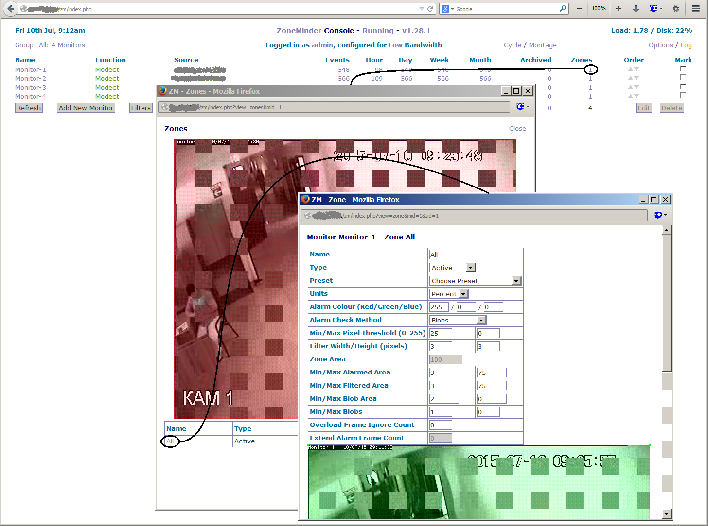
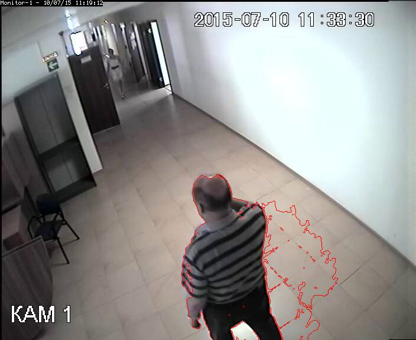
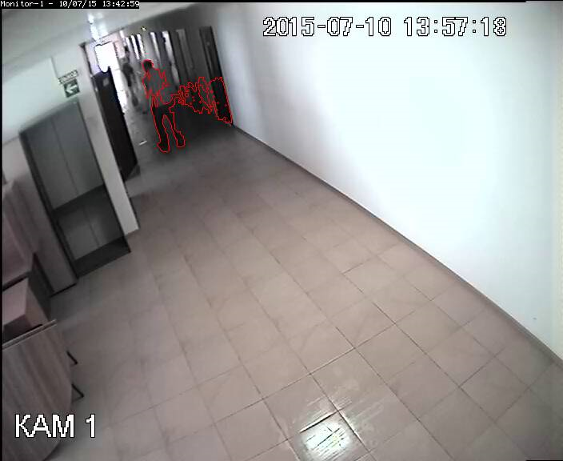

В ZoneMinder встроена программная функция определения движения на основе анализа захватываемого камерой изображений.
В стандартной настройке камеры чувствительность детектора движения достаточно низкая. И событие Alarm возникает при крупных перемещениях в центральной зоне картинки с камеры. Таким образом, при записи в режиме Modect (запись только событий движения) перемещения могут просто не записаться, потому что система не включит состояние Alarm.
Чтобы увеличить чувствительность алгоритма определения движения, нужно зайти в настройку зон наблюдения для каждой камеры (Столбец Zones на главном экране). По-умолчанию у каждой камеры есть одна зона, которая покрывает все пространство кадра, и называется All. В настройках этой зоны есть несколько параметров, изменяя которые можно изменить порог срабатывания детектора движения.

Детектор на основе блобов Alarm Check Method: Blobs, который выставляется по-умолчанию, очень ненадежный. Даже если установить настройки согласно пресету Preset: Best, High Sensitivity, то определение наличия людей все равно будет надежно срабатывать только на светлом фоне. Например, на фоне стены или пола движение человека будет обнаружено. Но на фоне шкафов и мебели - далеко не факт.
Чтобы понять, как работает детектирование по блобам, и на каких зонах изображения оно срабатывает, можно залезть в кеш изображений и посмотреть на обработанное изображение. Почему-то в ZoneMinder нет настройки просмотра обнаруженных областей движения, хотя картинки с такими областями сохраняются на диске. Кеш с изображениями каждого события (event) обычно расположен в каталоге:
/var/cache/zoneminder/events/Монитор/Год/Месяц/День/Час/Минута/Секунда
Видеопоток представлен просто в виде последовательности jpg-файлов.
Если включен режим обнаружения движения по блобам, то в каталоге будут файлы с именами вида:
XXXXX-capture.jpg
XXXXX-analyse.jpg
Файлы capture содержат просто поток, а файлы analyse содержат картинку с обнаружением зоны движения. Вот пример файла с анализом движения:

Таким образом, просмотрев каталог с одним эвентом, можно понять, в какой момент срабатывает детектор движения и в какой момент он перестает срабатывать (просто по наличию красной обводки движущегося объекта или, что то же самое, по наличию самих analyse файлов). И окажется, что очень много явного движения человека в зоне камеры детектор просто не замечает даже в максимальных настройках.
Чтобы подтвердить свою догадку о том, что Blob-детектор плохо обнаруживает движение, можно посмотреть две настройки: галка на мониторе - Edit - вкладка Buffers. Настройки называются Pre Event Image Count и Post Event Image Count. У меня стоят следующие значения:
Pre Event Image Count: 25
Post Event Image Count: 50
Так вот, в каждом каталоге с событием, в моем случае будет четко 25 capture изображений (т. е. кадры до события), потом несколько capture и analyse изображений (которые показывают, что обнаружил Blob- алгоритм определения движения), а потом еще 50 capture изображений (т. е. кадры после события). И оказывается, что и в кадрах ДО и в кадрах ПОСЛЕ есть очень много движений, которых детектор не обнаруживает.
Еще один признак плохой работы Blob-детектора, это то, что при наличии двух камер одна камера показывает, что человек явно зашел в зону видимости второй камеры, но у второй камеры нет события, что человек появился. То есть происходит ситуация, что мы видим, что человек прошел возле камеры, а что он делал дальше возле другой - неизвестно, хотя вторая камера должна была зафиксировать движение (это я говорю про режим Modect).
Попытка понизить параметр Min/Max Pixel Threshold с Min 20 до Min 5 (похоже, что это параметр допустимого изменения яркости анализируемой точки), привела только к тому, что стала более обширна зона на кадрах, где движение обнаружено. Кадры с явным движением, на которых движение не обнаружилось, как были, так и остались.
Путем долгих проб были найдены параметры, которые для вышеприведенного кадра размером 703x575 более-менее отлавливают небольшие области движения:

Параметры следующие:
Units: Percent
Alarm Check Method: Blobs
Min/Max Pixel Threshold (0-255): 15 - 0
Filter Width/Height (pixels): 3x3
Zone Area: 100
Min/Max Alarmed Area: 1 - 0
Min/Max Filtered Area:1 - 0
Min/Max Blob Area: 1 - 0
Min/Max Blobs: 1 - 0
Как видно, параметры Alarmed, Filtered, Blob Area выставлены в 1%. Задать размер области меньше одного процента интерфейс не позволяет. Вместе с тем, даже этот 1% не определит движение у объекта, размером с девушку в белом платье на предыдущей картинке.
Поэтому, нужно тестировать режим Alarm Check Method: AlarmedPixels. Это более простой режим, который просто ищет различия в одинаковый точках двух последовательных кадров. Но проблема в том, что увидеть, какие точки алгоритм посчитал измененными, невозможно. Данный алгоритм не сохраняет analyse кадры на диске, и поэтому сложно понять на каких кадрах было обнаружено движение. Для того, чтобы этот режим определял движение небольших объектов, нужно выставить размер тревожной области в 1%:
Min/Max Pixel Threshold (0-255): 15 - 0
Min/Max Alarmed Area: 1 - 50
Практика показывает, что метод AlarmedPixels гораздо лучше определяет движение мелких объектов в затемненных местах, чем метод Blobs. Пока что я остановился именно на нем.